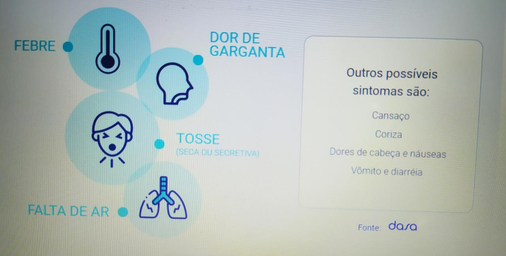

Quem são os principais grupos de risco? De acordo com estudos publicados, os mais vulneráveis ao novo Coronavírus são pessoas idosas ou com condições pré-existentes, como problemas respiratórios ou diabéticos.
Estou fora dos grupos de risco. Meus sintomas serão mais leves? Por mais que muitos dos casos da COVID-19 sejam leves e assintomáticos em pessoas jovens, essa população não está 100% imune contra o vírus. Autoridades americanas relataram que uma porcentagem significativa das internações graves em hospitais por causa de Coronavírus é de pessoas entre 20 e 50 anos. Mesmo que os casos não necessitem de internação, o respeito ao período de quarentena ajuda a impedir a disseminação do vírus.
Quais os sintomas do Coronavírus?
Confira os sintomas mais comuns
